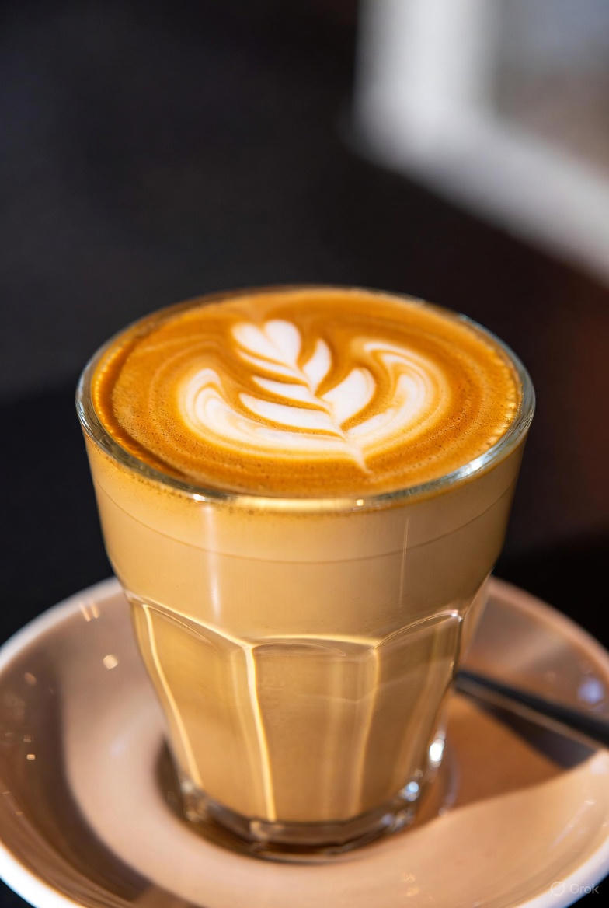
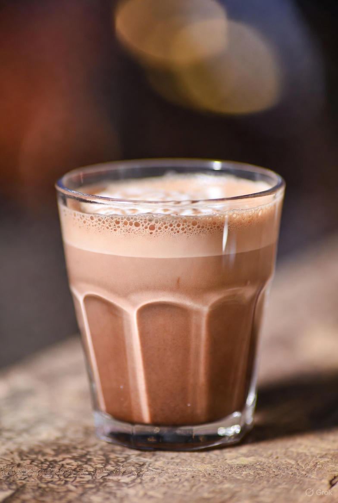
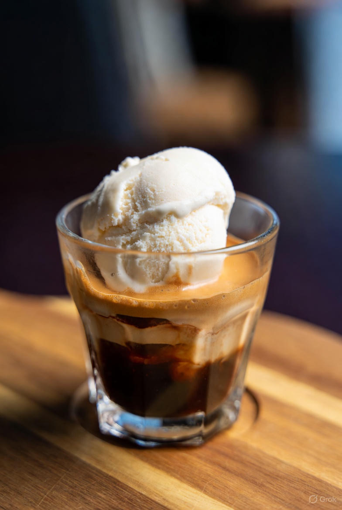
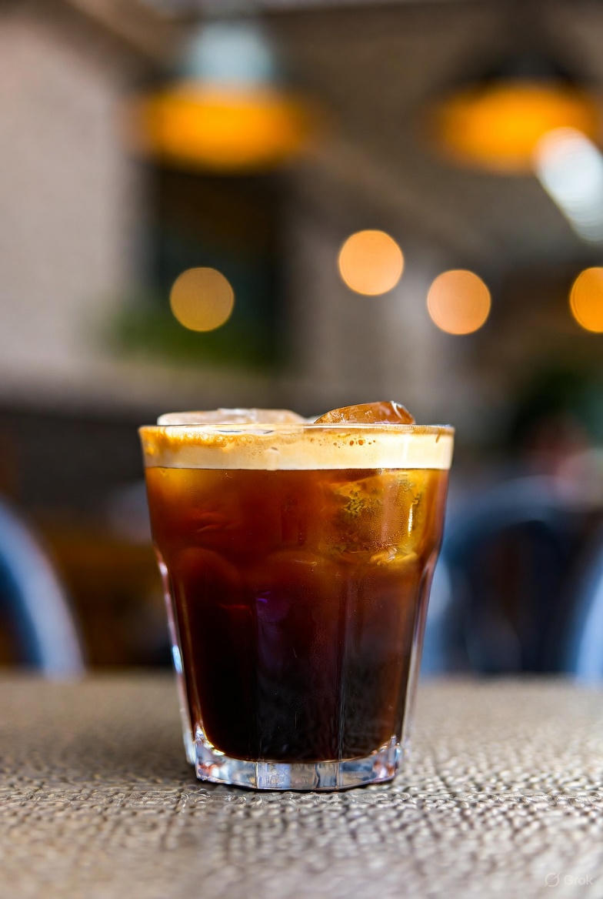

Recetas de Nuestros Baristas
Aprende a preparar tus bebidas favoritas con las técnicas y secretos de nuestros expertos en café.
Espresso

El espresso es la base de toda bebida de café. Se caracteriza por su cuerpo intenso y una crema dorada en la superficie.
Ingredientes
- 18 g de café molido fino
- 30 ml de agua caliente (90–94 °C)
Preparación
- Muele el café justo antes de prepararlo, buscando una textura similar a la sal fina.
- Compacta el café en el portafiltro de la máquina espresso.
- Extrae el café durante 25 a 30 segundos.
- Sirve inmediatamente en una taza precalentada y disfruta su aroma concentrado.
Latte
El café latte combina la suavidad de la leche vaporizada con el toque fuerte del espresso. Es ideal para quienes prefieren un sabor más cremoso.
Ingredientes
- 1 espresso (30 ml)
- 200 ml de leche entera
- Azúcar o jarabe al gusto
Preparación
- Prepara un espresso y resérvalo.
- Vaporiza la leche hasta que tenga una textura aterciopelada, sin burbujas grandes.
- Vierte la leche lentamente sobre el espresso.
- Decora con arte latte si deseas un toque profesional.
Cappuccino

Un equilibrio perfecto entre espresso, leche y espuma. Su textura cremosa y su sabor intenso lo hacen irresistible.
Ingredientes
- 1 espresso (30 ml)
- 100 ml de leche entera
- Cacao en polvo o canela (opcional)
Preparación
- Prepara el espresso en una taza amplia.
- Vaporiza la leche hasta crear una espuma densa pero ligera.
- Vierte la leche sobre el café, sosteniendo la espuma con una cuchara.
- Termina espolvoreando cacao o canela encima.
Mocha
El café mocha es la mezcla perfecta entre el sabor amargo del espresso y la dulzura del chocolate.
Ingredientes
- 1 espresso (30 ml)
- 2 cucharadas de chocolate en polvo o jarabe de chocolate
- 150 ml de leche vaporizada
- Crema batida (opcional)
Preparación
- Disuelve el chocolate en el espresso caliente.
- Agrega la leche vaporizada lentamente.
- Decora con crema batida y virutas de chocolate si deseas.
Affogato
Un postre italiano que combina la calidez del espresso con la dulzura del helado. Simple, elegante y delicioso.
Ingredientes
- 1 bola de helado de vainilla
- 1 espresso caliente (30 ml)
- Virutas de chocolate o almendras (opcional)
Preparación
- Coloca la bola de helado en una copa pequeña.
- Vierte el espresso caliente sobre el helado justo antes de servir.
- Decora con virutas de chocolate o almendras tostadas.
Cold Brew
Un café frío infusionado lentamente durante horas, resaltando notas dulces y menos acidez. Perfecto para el verano.
Ingredientes
- 100 g de café molido grueso
- 1 litro de agua fría
- Hielo al gusto
Preparación
- Mezcla el café molido con el agua en una jarra grande.
- Deja reposar en el refrigerador de 12 a 18 horas.
- Filtra la bebida y sírvela sobre hielo.